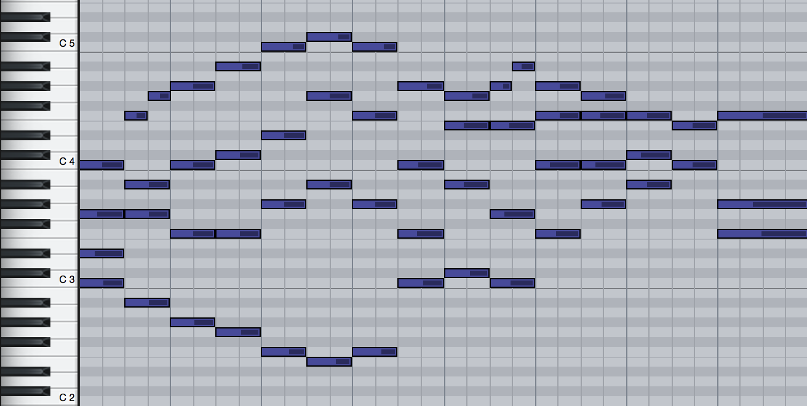
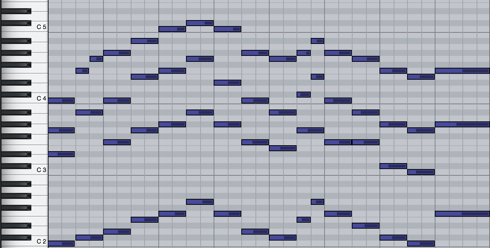

1. 两声部的运动方式
1. 两声部的运动方式
在和声的美学体系中，对声部配置的考究到了极致，以至于连两个声部之间的相对运动方式都有着专门的命名。

- 平行（Parallel）：两个声部向同一方向运动（同时上行，或同时下行）
- 斜行（Oblique）：两个声部中一个声部保持同音不动，另一个声部运动
- 反行（Contrary）：两个声部向相反方向运动（一上一保或一下一上）
阅读过旋律篇第V章的读者，应该已经对这三种运动形式有所了解。顺便一提，像上谱斜行中的某一声部那样“保持同一音高不动”，在和声学中称为“保留音（保持）”。
这些命名与具体的音程度数无关，纯粹由声部运动的相对方向来决定。在三种方式中，“反行”被公认为音响最为丰满生动；相反，“平行”在多声部织体的丰富度上被认为相对欠缺。
重奏的美学哲学
大家可能会疑惑：“运动方向难道还分三六九等、高低贵贱吗？”关于“反行之美”是理解和声学的关键核心，我们有必要更深入地剖析一番。
这是一段高音声部与低音声部完全以“反行”构建的音频示范。在钢琴卷帘窗（Piano Roll）中呈现出如下形态：

当展开时两极同时张开，当收缩时两极同时聚拢，因此呈现出形如鲣鱼（梭形）般的优美轮廓。古典派时期的音乐家们聆听这样的音响时，感受到了以下美感：
- 上行线条与下行线条构成了两个独立的故事叙事，两条旋律线精妙绝伦地相互交织，艺术格调极高（音乐的信息密度极为充盈）
- 纵向的声部空间距离剧烈地开合张弛，带来了卓越非凡的力度动态感（Dynamics / 强弱开阔感）
接下来，我们反过来听一听完全由“平行”构成的模式。高音旋律保持完全一致，仅改变其他声部的运动方式：

由于所有声部步调一致，上升时全员上升，下降时全员下降，呈现出宛如随波逐流的海带一般的轮廓。这与刚才截然相反，呈现出以下听觉特征：
- 所有声部都变成了高音声部的附属影子，缺乏多线条叙事的多彩层次
- 上下声部的音程开阔度几乎没有变化，动态层次单调乏味
虽然这种对比听起来带有一点主观色彩，但至少在古典主义时代，“梭形张弛风格”是绝对的主流审美。在实践中，深刻理解两者的美学差异并融会贯通才是关键。
这是拉赫玛尼诺夫的一首传世名作，淋漓尽致地展现了“反行”所蕴含的戏剧张力与崇高美感。请结合以下解析完整聆听这首作品：
开端的小提琴演奏着堪称核心主导动机的主旋律线条。那是一段从高处轻吟、缓缓盘旋下行的忧郁旋律。
随后进入中段，从1分47秒开始男声合唱切入，但此时合唱严密贴合着小提琴以“平行”方式运动。在此处合唱依然只是主旋律的衬托背景，因而特意不作独立运动，为后续的高潮展开保留了手牌。
而在2分56秒当核心主旋律再度回归时，这一次担当旋律领唱的是男声独唱。在此处，面对男声独唱缓慢拾级而下的旋律线条，小提琴却奏响了节节攀升、直冲云霄的反向线条。其结果构筑成了规模极其宏伟浩瀚的“反行”声浪！
随后，在小提琴攀至巅峰转而下行之处，男声旋律恰好大跳上行，此处同样是惊心动魄的“反行”。最终，小提琴下行落入主音，男声上行落入主音，二者在纯净的同度（Unison）上完美交汇收束。堪称绝笔！
下沉的哀思与昂扬的激情在此交织共存，你既可以将其解读为两位主人公命运的错身而过，也可以体会为一个灵魂深处的矛盾挣扎；无论何种解读，戏剧张力都极其摄人心魄。 对于“音乐的信息密度”与“叙事的多样性”，大家是否已经有了真切的领悟？
正如中段合唱对平行进行的精彩运用一样，我们绝非在宣扬“平行＝邪恶”或“平行＝幼稚”。只不过对于“平行”运动，在某些特定情境下会被古典和声学判定为严厉的“禁则”，因此使用时需要格外警惕与规范。关于这些禁则，我们将在后续详细讲解。
希望大家牢记的一点是：和声学正是像这样将旋律声部线条的走向视为至高无上的准则。在现代编曲中我们很少会盯着钢琴卷帘窗去思考它究竟像鱼还是像海带，但深入思考这种“横向线条”与“纵向开合”，正是正统和声学的核心灵魂。
2. 标准连接
正因如此，如何将和弦优美无缝地连接起来，构成了和声学最为核心的心脏部分。
在谈论繁琐的禁则之前，我们首先来看看和弦之间应当如何连接的“基本原则”。只要遵循这些大原则去连接声音，就算偶有触碰细节禁则，整体声部织体也绝对能呈现出相当端庄正统的气象。
需要预先声明的是，接下来介绍的仅仅是被称作“标准连接”的最经典、最规范的连接模式。在权威教科书中也明确附有注释：这绝不代表只有这一种唯一的连接方式。
也就是说，通过以最易上手、最规整的模式展开练习，首先让你的双眼、双手与耳朵切实领悟何为优良的声部走向与声音质感。这才是根本目的。所有的和声学教材在本质上都是“提升声部掌控技能的训练营”，只有掌握了这些基本功，你才能在日后为自己的音乐探索出最理想的声音织体。
3. 最短路径原则（Law of the Shortest Way）
如果将和弦理想连接的方法论高度提炼浓缩，最言简意赅的一句话就是——“尽可能就近、平滑地级进”。 例如从 I 走向 IV 时，若前后连接的和弦存在共同音，该音符由同一个声部继续保持承担；而其余声部为了尽可能维持原有的排列密度（密集排列或开放排列），全部向最近的和弦音级进移动。

像这样，仅仅依靠这一条最高优先级的指导原则，所有声部的运动方向便被自然而然地全部确定下来。在古典和声的美学框架中，理想的连接方式往往高度收敛，留给你的随意选项其实并不多。
我们不妨也来看看违背这一原则的反面示例：

左侧示例中，高音声部发生了幅度极大的大跳，声部连接显得突兀剧烈。按理说，高音声部只需平缓级进上行二度即可。右侧示例中，高音声部上行而次中音声部下行，导致整体和弦的纵向跨度骤然拉开，从密集排列突变成为了开放排列；按理说高音声部与次中音声部都只需原位保留共同音即可。
不过需要强调的是，这些仅仅是“未遵循常规原则”，并不属于后文要讲的严重违纪的“禁则”。因此，如果在旋律构思上有明确的艺术设计需要，这类跳跃进行也是完全可以成立的。原则终究是原则，其地位属于“若无特殊理由，遵循它绝对不会出错”的良好实践指引。
命名渊源
关于这一原则，在《岛冈和声》中并未给出特定命名，查阅多部外文教材通常也未作特殊冠名。然而若翻阅勋伯格（Arnold Schoenberg）的经典巨著《和声理论》（Theory of Harmony），便会发现其中记载了安东·布鲁克纳（Anton Bruckner）曾将此法则精辟地概括为*“最短路径法则”（Law of the Shortest Way）*。在本站教程中我们采纳这一典故，正式将其称为最短路径原则。
4. 外声反行原则
当两个和弦之间不存在共同音时（例如从 IV 进行到 V），基本规范是——外声部（最高音与最低音）必须呈反向进行。这自然直接脱胎于“反行最具声学丰满度”的根本美学哲学。

低音声部从F上行至G，因此高音声部应当相反地下行。随后，剩余的中音与次中音声部则遵循“最短路径原则”顺势平滑下移。这里我们也来看看不当处理的错误范例：

左侧是未遵循反行原则、随手让高音声部上行的失败范例。其余声部顺次就近连接的结果，导致了“所有四个声部全员同向二度上行”，音响极其干瘪僵硬。
右侧则是一种极为隐蔽的常见失误：虽然外声部遵循了反行，但次中音声部发生了不协调的跳动，导致高音与次中音声部同时演奏了B音。我们此前强调过“尽量避免三音重复，若必须重复应选择根音或五音”，此处不仅重复了三音，而且重复的偏偏是具有强烈倾向性的“导音”，这是极其严重的恶性声部失衡！ 在此情境下，次中音声部理应下行二度，走向与低音完全重合的G音（根音）。次中音与低音形成同度重合，非但没有任何过错，反而是最健康的配置。
面对如此严格的声部轨迹限定，大家可能会担心：“被规定得这么死板，我还能自由创作自己想要的音乐吗？” 大可放心！正如前文所述，这仅仅是最能清晰呈现和声哲学的“标准入门范式”。在此建立起对优美声音的敏锐辨别力之后，你就能将这些技术自如地与你个人的独特艺术表达有机结合起来。
从这两大原则起步
因此，希望大家首先将这两大原则牢记于心。单看这两点，执行起来似乎并不复杂吧？仅仅在编排时保持对这两大原则的自律，声音线条就能展现出惊人的典雅顺畅，请大家务必在实战中尝试运用。
然而，真正考验人耐心的挑战也正始于此：当各路森严的“禁则”与“限制”叠加进来时，诸如 V → VI 等若干和弦进行就需要施加更加精密的特殊照料！揭开这些“禁则”与“限定”的面纱，正是我们接下来的核心课题。
不知大家是否对“和声学”所构建的严密世界有了初步的宏观轮廓？ 排列与连接。仅仅理解并重视这一对核心概念，就足以对你的编曲与多声部织体写作提供立竿见影的宝贵启示。
阶段总结
- 古典艺术音乐极致美感的根源，蕴含在对音符声部排列与声部连接的极致考究之中。
- 上方三声部被控制在一个八度以内的配置称为“密集排列（Close Voicing）”，超过一个八度的称为“开放排列（Open Voicing）”。
- 两个声部之间的相对连接方式根据运动方向划分为“平行”、“斜行”与“反行”，其中反行在声学丰富度上居于首位。
- 请将“最短路径原则”与“外声反行原则”确立为和弦声部连接的两大基石理念。
- 在彻底掌握规范范式之后，便可在艺术需要的驱动下适度打破这些范式，使其与你真实的个人表达和谐共生。